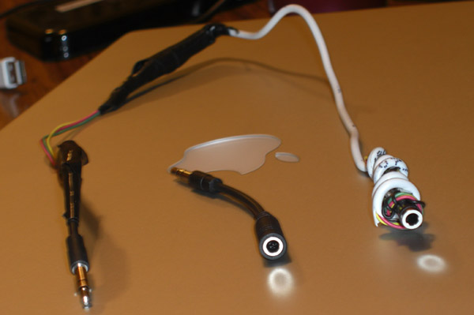
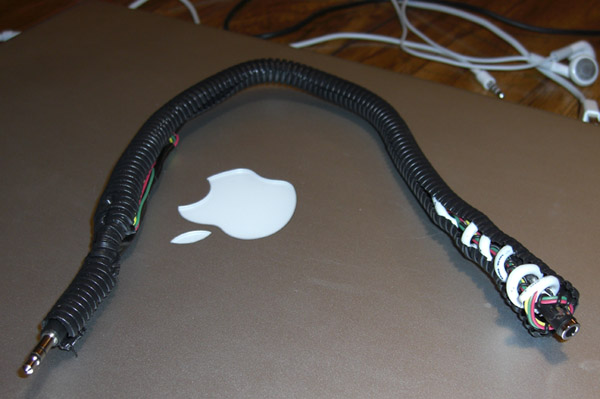
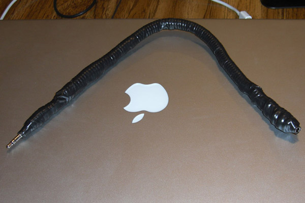
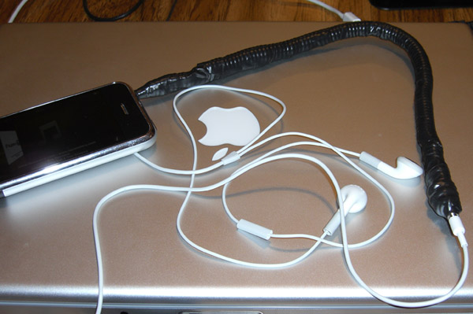

Foreword: it isn't obvious in the context — this cable is to used in the car, hooked up to car amplifier RCA cable, so it's thickness isn't a big deal.
After last time I split cable apart and soldered back together, it lasted a couple of days only if that. So I ordered a new one and opened up old one again. Changed a bit how I do old one and keep brand new two dollar one as a backup.

Original cable vs same but hacked cable.
So what we can see above is hacked cable vs. original. As you see cable ends are same. The main issue is cable ends, they tend to fall apart eventually. On the very right hand side you can see how I wrap cable end (the main one I had issue with). The reason I am doing it is so that cable end is as stationary as possible on the wire.
Then I put a wire loop over the whole thing.

Wrapping iphone adapter with wire loom.
This makes the whole thing more solid, less fragile. Then I wrap the whole thing with electrical tape.

Wrapping iPhone wire with a wire loom.
And final test.

Testing new iPhone adapter.
We'll see how long this lasts. Hopefully for a while.